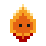

Ideias fora
de órbita.
Um pequeno estúdio.
Escolha um mundo para descobrir.
CindraUm lugar para organizar a vidaDisponível
CommissionMatchO encontro entre ideias e artistasEm prévia
MangueHistórias que criam caminhosEm desenvolvimento
Três mundos. Uma viagem.

Você pousou em CindraO Vale dos Cantinhos
Ember e oito cuidadores tomam conta de cada canto. Morfeu deixou a nave no prado e saiu pra passear.
Clica em quem mora aqui. Tem mais gente do que parece.
Conhecer o CindraVocê chegou em CommissionMatch
O Mapa dos Traços
Cada terra, um estilo. Cada pedágio, na tua moeda.
Três terras cabem na tua bolsa. Escolhe uma no mapa.
Preços de exemplo.